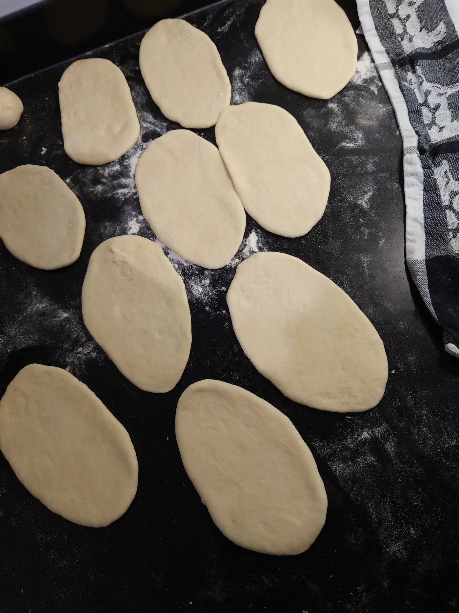

Brabantse worstenbroodjes
Zachte, goudbruine broodjes met een kruidige worstvulling. Het deeg krijgt twee rijsbeurten voordat je de broodjes vormt, en daarna nog een laatste rijs op de bakplaat.

Ingrediënten voor de worst
- 1 kg gekruid gehakt
- 8 sneetjes witbrood
- 100 ml water
- 1,5% gehaktkruiden, circa 15 g
- 0,5% pepervlokken, circa 5 g
- 0,5% bakpoeder, circa 5 g
De percentages zijn berekend over het gewicht van het gehakt. Bij 1 kg gehakt is 1,5% dus 15 gram en 0,5% 5 gram.
De worst voorbereiden
- Maal het witbrood zo fijn mogelijk.
- Meng brood, water, kruiden, pepervlokken en bakpoeder goed door het gehakt. Kneed niet langer dan nodig; te veel binding maakt de worstjes taai.
- Verdeel het mengsel in porties van ongeveer 40 gram. Rol er worstjes van circa 8 cm lang van. Je komt uit op ongeveer 30 stuks.
Ingrediënten voor het brooddeeg
- 720 g patentbloem
- 420 ml warm water, waarvan je eerst 375 ml gebruikt
- 30 g boter
- 13 g zout
- 13 g droge gist of 32 g verse gist
- 8 g witte basterdsuiker
- 108 g broodverbetermiddel, optioneel
Voor het eistrijksel
- 2 eieren, of 1 ei en 1 eidooier
- Een mespunt zout
Klop het eistrijksel los, dek het af en laat het rusten in de koelkast.
Broodverbetermiddel is optioneel. Ik koop dit, samen met de patentbloem, bij de Genneper Watermolen in Eindhoven.
Het deeg maken
- Werk je met droge gist, doe dan alle ingrediënten in de kom van een keukenmachine met deeghaak. Laat rustig draaien en voeg geleidelijk 375 ml water toe. Bewaar de rest om later zo nodig bij te schenken.
- Werk je met verse gist, houd het zout eerst apart. Voeg het zout pas toe zodra de eerste 375 ml water is opgenomen en er een deeg begint te ontstaan.
- Kneed tot je van een bolletje deeg een heel dun vliesje kunt trekken.
- Vorm een strakke bol en leg deze in een met bloem bestoven theedoek. Laat minimaal 30 minuten op kamertemperatuur rijzen.
- Druk na de eerste rijs alle lucht uit het deeg. Vorm een rechthoek van ongeveer 30 × 25 cm en rol deze zo strak mogelijk op.
- Pak de rol opnieuw in de bebloemde theedoek en laat nogmaals 30 minuten rijzen.

Vormen, rijzen en bakken
- Verdeel het deeg in stukjes van ongeveer 40 gram. Vorm strakke bolletjes door ieder stukje een paar keer dubbel te vouwen. Leg ze afgedekt tussen bebloemde theedoeken.
- Rol de bolletjes in twee keer uit tot ovale lapjes van ongeveer 10 × 6 cm.
- Leg een worstje in het midden. Vouw eerst de korte kanten over de uiteinden van het worstje en breng daarna de lange kanten naar elkaar. Knijp de naad goed dicht.
- Leg de broodjes met de naad naar beneden op een met bakpapier beklede bakplaat. Leg maximaal 12 broodjes op een reguliere bakplaat; bij 30 stuks kun je drie platen van 10 maken.
- Strijk de broodjes direct in met eistrijksel en laat ze minimaal 30 minuten op kamertemperatuur rijzen.
- Verwarm de oven voor op 190 °C. Zet een platte ovenschaal met kokend water op de bodem van de oven.
- Strijk de broodjes vlak voor het bakken nogmaals in met eistrijksel.
- Bak ze in ongeveer 20 minuten mooi goudbruin. Laat ze na het bakken op een rooster afkoelen, zodat ze goed kunnen uitdampen.